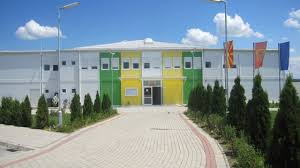

Моето име е Петар, и јас сум програмер со страст кон компјутери и технологија. Роден сум и пораснав во прекрасниот град Скопје, каде што од мали нозе развив голема љубов кон компјутери и нивното функционирање. Оваа страст ме водеше кон мојата сегашна професија, и со годините, тоа се претвори во моја животна мисија да креирам и иновирам преку програмирање.
Завршив основно и средно образование во училиштето Сосу-Илинден во Скопје. Таму, се истакнав во скоро секој стручен предмет и ги развив основите на моето знаење, што ми ги овозможи да ги применувам покомплексните програмски вештини во иднината.
Потоа, продолжив со моето високо образование на Факултетот за информатички науки и компјутерско инженерство (Финки), каде што сум и сега. Во текот на студиите, имав привилегија да работам на различни интересни проекти, да соработувам со талентирани луѓе и да учам нови технологии и тенденции во областа на програмирањето. Ова искуство ми донесе не само знаење, туку и увереност дека можам да се адаптирам и да решавам комплексни предизвици во мојата кариера.
Мојата кариера досега ми донесе многу задоволство и исполнување. Со нетрпение ја очекувам иднина полна со нови предизвици и можности за напредок. Секогаш сум отворен за учење и истражување на нови технологии, и се надевам дека мојата страст кон програмирањето ќе продолжи да ме води кон нови и иновативни проекти во иднина.
Образование
Моето образование е крајно важен дел од мојот животен пат. Започнав во основното училиште "Стив Наумов", каде ги стекнав основните знаења и вештини кои ми служеа како темел за подоцнешниот развој. Во средното училиште "Сосу-Илинден" се фокусирав на програмирањето, каде што не само што учев, туку и активно учествував во различни натпревари и проекти. Ова искуство ми помогна да развијам мојот тимски дух и лидерски способности, што се покажа како клучно за мојот личен и професионален развој.
По завршувањето на средното образование, одлучив да продолжам моето учење на Факултетот за информатички науки и компјутерско инженерство (ФИНКИ). Таму имав привилегија да учествувам во истражувачки проекти, да присуствувам на конференции и да се ангажирам во студентски организации. Ова искуство ми донесе поголемо разбирање на мојата област и ме подготви за предизвиците во професионалниот свет.
Според мене, образованието не е само стекнување на знаења, туку и процес на личен раст и развој. Преку сите овие учебни искуства, станав посветен на постојаното учење и непрекинатиот напредок, со цел да континуирам да се развивам како професионалец во својата област.

Хобија
Во слободното време уживам во многу различни активности кои ми помагаат да се релаксирам и да останам креативен. Едно од моите најголеми хобија е теретаната, која ми помага да одржувам здрав дух и тело. Редовното вежбање не само што ме одржува физички активен, туку и ми дава чувство на дисциплина и постигнување цели. Во теретаната можам да се фокусирам на своите лични цели, било да се тоа зголемување на сила, подобрување на издржливоста или едноставно одржување на општото здравје. Оваа активност ме исполнува и ми дозволува да го изразам мојот спортски потенцијал, како и да се ослободам од стресот и да се чувствувам посилно и поенергично.
Патувања
Во Париз, го посетив иконичниот Лувр и бев фасциниран од богатството на уметнички дела кои се изложени таму. Ајфеловата кула беше незаборавно искуство, особено ноќе кога целата е осветлена. Пробав многу традиционални француски јадења, како што се кроасаните и багетите за појадок, француското сирење и, секако, одличното вино. Народот во Париз не пречекаа со отворени раце и беа многу љубезни и пријатни. Вечерите во мали бистроа и кафулиња беа вистинско уживање, каде што можев да ги почувствувам пулсот и душата на овој неверојатен град.